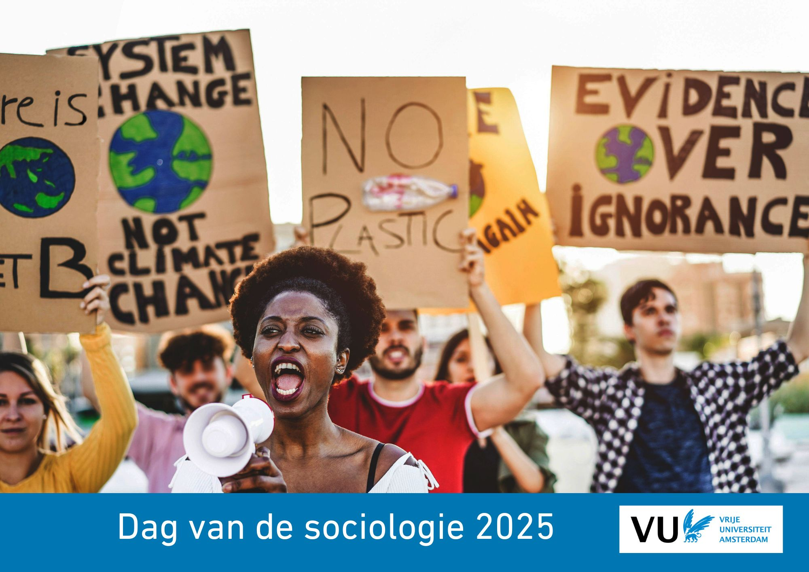

U kunt het volledige programma hier downloaden als pdf: Download programma.
Op deze pagina vindt u:
Het programma is het laatst aangepast op 18 June 2025 om 00:27
| Tijd / Time | Activiteit / Activity | Locatie / Location |
|---|---|---|
| 9:00-9:30 |
Inloop (koffie) Welcome (coffee) |
Foyer (hoofdgebouw) Foyer (main building) |
| 9:30–10:45 |
Sessies Ronde 1 Sessions Round 1 |
Zie: Sessieoverzicht See: Session overview |
| 10:45–11:00 |
Pauze & wisseling locatie Break & change of location |
|
| 11:00–12:30 |
Sessies Ronde 2 Sessions Round 2 |
Zie: Sessieoverzicht See: Session overview |
| 12:45–14:00 |
Ledenvergadering NSV (incl. lunch) |
Forum 2 (hoofdgebouw) |
| 12:45–14:00 |
Lunch Lunch |
Foyer (hoofdgebouw) Foyer (main building) |
| 14:00–15:30 |
Sessies Ronde 3 Sessions Round 3 |
Zie: Sessieoverzicht See: Session overview |
| 15:30–15:45 |
Pauze & wisseling locatie Break & change of location |
|
| 15:45–17:15 |
Plenaire Sessie (prijzen en debat) Plenary Session (awards and debate) |
KC07 (begane grond HG) KC07 (ground floor main building) |
| 17:15–18:30 |
Borrel Reception |
Receptieruimte achter de Aula Reception room behind the Aula |
|
Zaal / Room |
Ronde 1 / Round 1 9:30–10:45 |
Ronde 2 / Round 2 11:00–12:30 |
Ronde 3 / Round 3 14:00–15:30 |
|---|---|---|---|
| BV-0H19 | Stratificatie & Klasse (NL) | Beleidsdrukte rondom vluchtelingen: wat levert het op? (NL) | Gender & Seksualiteit 3 – Queer, individuele expressie, normativiteit en emoties (NL) |
| BV-1H17 | Work 1 – How employers and institutions shape labour market inequalities (ENG) | Work 3 – How employers and institutions shape labour market inequalities (ENG) | Werk 4 – Opleiding, werk en welzijn (NL) |
| BV-1H24 | Work 2 – Choices in work (ENG) | Discrimination (ENG) | Migratie & Etniciteit 3 – Het aanpakken van de etnische kloof in het hoger onderwijs (NL) |
| BV-1H26 | Migration & Ethnicity 1 – Family, Parenting & Intergenerational Struggles (ENG) | Migration & Ethnicity 2 – Older Migrants, Urbanity & Diversity (ENG) | Migration & Ethnicity 4 – Migration Systems, Religion & Belonging (ENG) |
| BV-1H50 | Cultuur 1 – Culturele Participatie, Stratificatie & Kapitaal (NL) | Violence & (in)security (ENG) | |
| HG-01A32 | Informal Care 1 – Informal care in varying contexts (ENG) | Informal Care 2 – Caregiver outcomes (ENG) | Mantelzorg 4 – Typen mantelzorgers (NL) |
| HG-01A43 | Social networks (ENG) | Methods 2 – Open Science: open-source software for advanced data analysis in sociology (ENG) | Methods 4 – Big data in sociological research (ENG) |
| HG-01A44 | Methoden 1 – ‘Thinking-with’ en ‘thinking-thick’ in co-creatief onderzoek met gemarginaliseerde gemeenschapppen (NL) | Methods 3 – Computationele Sociologie in de Lage Landen (I) (NL) | |
| HG-01A58 | Sociology of Music 1 – The content of music, its impact and its future (ENG) | Sociology of Music 2 – The organization of music, its consequences, and ways forward (ENG) | |
| HG-02A16 | Gender & Sexuality 1 – Stereotypes in pornography (ENG) | Gender & Sexuality 2 – LGBTIQ+ inclusivity (ENG) | Gender & Sexuality 4 – Prostitution and sex work: debate, risks and rewards in different institutional frameworks (ENG) |
| HG-02A24 | European Social Survey – Inzichten uit 12 jaar aan data (NL) | Mantelzorg 3 – Mantelzorg in context (NL) | Education 4 – Educational Systems, Teacher Bias & Policy Effects (ENG) |
| HG-02A33 | Family & Youth 1 – Choices in households, work and care (ENG) | Family & Youth 2 – Transitions in youth and young adults (ENG) | |
| HG-02A36 | Political Sociology 1 – Bridging gaps: Citizen Engagement, Solidarity, Inequality (ENG) | Political Sociology 2 – Digital Media, Protest, Trust (ENG) | Politieke Sociologie 4 – Representatie en publiek discourse (NL) |
| HG-02A37 | Political Sociology 3 – Informed Citizenship and Perceptions of Democracy and Freedom of Speech (ENG) | Climate Action (ENG) | |
| HG-05A32 | Education 2 – Racialization, Inclusion & Inequality in Schools (ENG) | Care / Health 1 – Choices and context (ENG) | |
| HG-05A33 | Onderwijs 1 – Representatie, Curriculum & Gelijkheid in het Basisonderwijs (NL) | Education 3 – Critical Knowledge & Inequality in Higher Education (ENG) |
HG = hoofdgebouw / main building
BV = BelleVUe (op campusplein / on campus square)
Hieronder vindt u de details van alle sessies.
zaal, sessie, etc.ronde of sessie.★ = Young Talent Masterclass van Tijdschrift Sociologie
Hieronder vindt u het programma van alle presentaties.
sessie, auteur, etc.auteur of ronde.★ = Young Talent Masterclass van Tijdschrift Sociologie
De totaaltijd per spreker hangt van het aantal sprekers per sessie:
- Sessie 1 met 3 sprekers: 25 minuten
- Sessie 1 met 4 sprekers: 18 minuten
- Sessie 2/3 met 4 sprekers: 22 minuten
- Sessie 2/3 met 5 sprekers: 18 minuten
Wij adviseren een presentatietijd van 13 minuten en de overige tijd te reserveren voor discussie. De discussies vinden plaats direct na elke presentatie.
Het is niet nodig om van te voren je presentatie ergens te uploaden. Je kan je presentatie op een USB meenemen en op de aanwezige computer in de zaal zetten, of je kan je eigen laptop aansluiten (elke type aansluiting is aanwezig).
: 06-41943422 (Jasper Muis) / 06-29466750 (Els Tettelaar)